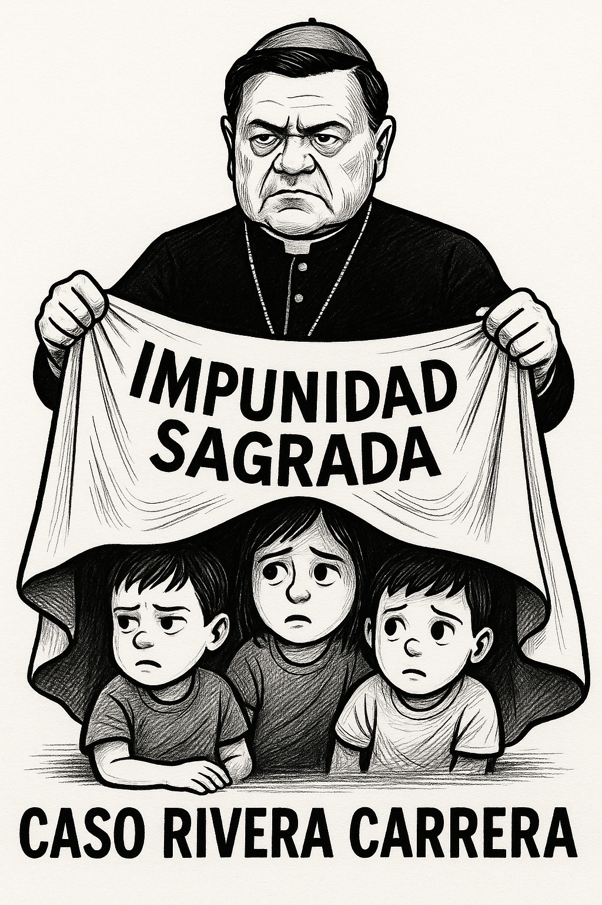
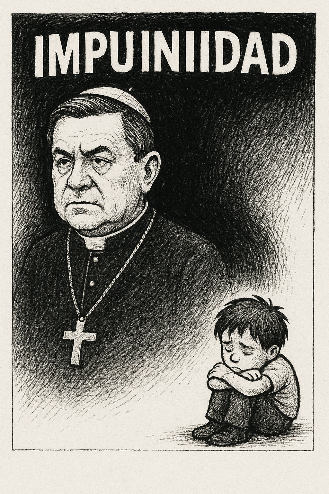

La persistente sombra de la impunidad en el caso Rivera Carrera
Descubre cómo un esquema de impunidad y falta de avances judiciales en el caso Rivera Carrera alimenta la desconfianza pública y la demanda de justicia para las víctimas.

La discusión pública en torno a las acusaciones que señalan al ex arzobispo primado de México, Norberto Rivera Carrera, por su presunta participación en el encubrimiento de abusos sexuales perpetrados por miembros del clero, continúa siendo un tema de profunda preocupación y debate en la sociedad mexicana. Este caso, lejos de desvanecerse con el tiempo, reemerge periódicamente, alimentado por la persistente demanda de justicia por parte de las víctimas y por la percepción de que figuras con poder eclesiástico gozan de una protección especial ante la ley.
El artículo de opinión recientemente publicado en La Jornada, al que hacemos referencia sin detallar su contenido específico para preservar la integridad de este análisis editorial, pone de relieve una problemática estructural que socava la confianza en las instituciones y perpetúa el dolor de quienes han sido agraviados. La aparente dificultad para que las investigaciones avancen y para que se establezcan responsabilidades concretas en casos de esta naturaleza genera una sensación de indefensión y refuerza la idea de que existe un manto de impunidad que cobija a ciertos actores dentro de la Iglesia católica.
Es fundamental comprender que la exigencia de rendición de cuentas en este tipo de situaciones no representa un ataque a la fe ni a la institución religiosa en su conjunto. Por el contrario, se trata de un llamado a la transparencia y a la aplicación equitativa de la ley, principios esenciales en cualquier sociedad democrática. Permitir que acusaciones de encubrimiento queden sin una investigación exhaustiva y sin consecuencias legales no solo revictimiza a quienes sufrieron abusos, sino que también envía un mensaje pernicioso a la sociedad, sugiriendo que existen ciudadanos por encima de la justicia.
La gravedad de los delitos de pederastia y su encubrimiento requiere una respuesta contundente y sin ambages por parte de las autoridades competentes. Es imprescindible que se agoten todas las líneas de investigación, se escuchen las voces de las víctimas y se determinen las responsabilidades correspondientes, sin importar la jerarquía o el cargo de las personas involucradas. Solo a través de la verdad, la justicia y la reparación se podrá comenzar a sanar las heridas causadas por estos actos y a reconstruir la confianza de la sociedad en las instituciones. El caso de Norberto Rivera Carrera, por su trascendencia y por el impacto que ha tenido en la opinión pública, se erige como un paradigma de la lucha contra la impunidad y como un recordatorio constante de la necesidad de garantizar que todos los ciudadanos, sin excepción, sean iguales ante la ley.
Resumen Editorial Parafraseado
Un reciente análisis periodístico subraya la persistente controversia en torno a Norberto Rivera Carrera y las acusaciones de encubrimiento de pederastia clerical en su contra. El texto enfatiza cómo la falta de avances significativos en las investigaciones y la ausencia de consecuencias legales hasta el momento alimentan la percepción de una "impunidad sagrada" que protege a ciertas figuras dentro de la Iglesia católica. Esta situación, se argumenta, no solo perjudica a las víctimas, sino que también erosiona la confianza pública en la justicia y en la propia institución religiosa. El artículo aboga por una actuación diligente y transparente por parte de las autoridades para garantizar la rendición de cuentas y el derecho de las víctimas a la verdad y la reparación, insistiendo en que la aplicación equitativa de la ley es fundamental para la credibilidad de las instituciones y para la construcción de una sociedad más justa.